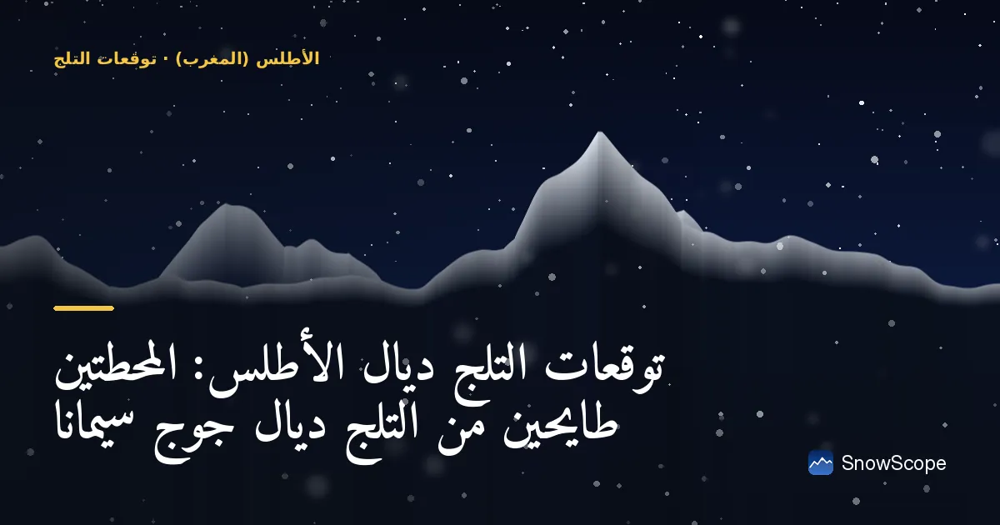

توقعات التلج ديال الأطلس: المحطتين طايحين من التلج ديال جوج سيمانا
نموذج التلج ديالنا قايقول ما فاش هطول تلج معقول جاي للا Jbel Hebri ولا Oukaïmeden ف جوج سيمانا لي جايين. المحطتين تبقى يابسا ديال هسا لحد ديال دجنبر الأول، وتلج جديد أقل من 1 سم متوقع ف كل الأطلس.
شوف توقعات التلج مباشرة ديال Jbel Hebri فالتطبيق ديال SnowScopeالعلو ديال التلج، التنبيهات والخريطة 3D، فابور.
ما فاش تلج ف التوقعات
كنت كايشوف جبال الأطلس ف فترات يابسة بزاف، والفترة هاي تبان مثل واحد منهم. النموذجين الأساسيين ديال الجو، اللي خدمين هليوم، متفقين على صورة كاحلة: صفر تلج جديد ف Jbel Hebri وصفر ف Oukaïmeden من دابا لحد 2 دجنبر. كل المنطقة غتشوف ف الأكث 1 سم ديال التلج الجديد ف جوج سيمانا لي جايين، وما فاش ناحيا تقدر توصل لحتى 20 سم.
النموذجين كايقسمو النظر ديالهم بين بداية الأسبوع (45 الميا ديال التلج كيتسقط ف الأيام 1 لي 7) والآخر ديال الأسبوع (الأيام 8 لي 14)، بصح الفرق ما عندو تأثير كبير حيت الشبابيك الجوج ما فيهم حتى تلج. الساحة ديال التلج ف الأطلس تقصرو من 20 كم² ف 16 نونبر لي 10 كم² هليوم، وتوقعاتنا تقول بحال هاد المستوى المنخفض بحال 21 نونبر.
| المحطة | العلو ديال التلج | تلج جديد، 72 س | جاي، الأيام الجاية | الفوق |
|---|---|---|---|---|
| Jbel Hebri | 0 سم | 0 سم | 0 سم | 2108 م |
| Oukaïmeden | 0 سم | 0 سم | 0 سم | 3258 م |

ما فاش علو باش نتعونو
كثيرا كانقيد التلج كايبقى ف الجهات الفوقانية لما الأرض الدنيا ماشي فيها تلج، بصح هاد المرة لا. ف الأرض ديال Oukaïmeden فوق 3000 م، النموذج كايقول صفر تلج جديد. الحال هاد كيتكرر من 2500 م فشي فوق ف كل الجبال اللي كاينة كنتابعو. حتى قمة Oukaïmeden ديال 3258 م ما غتشوف حتى تلج كيهط ف جوج سيمانا لي جايين.
هاد القصة ديال نضام ضغط عالي كيبقا يصد الرياح الأطلسية على شمال أفريقيا. بلا عاصفة تقدر تجيب التبخيرة وتقسرها تطلع الجبال، الجبال تبقى صافية.

شنو كايشي ف الأرض هليوم
فهاد الحين، المحطتين ما فيهم تلج كيقاس ف الجهات الفوقانية. الجوج قاعين ف صفر علو، وهاد الشي نورمال ف نص نونبر ف هاد الجهة ديال العالم، بصح معناه اللاعبين ما عندهم أساس باش يشتغلو. البقايا الرقيقة اللي ممكن بقات من الخريف اللي فات انقطاعو.

شنو اللي جاي من بعد
الشتوات اللي فاتو ف الأطلس كاتقول الغالب التلج كايجي ف دجنبر، والهطولات الكبيرة كاتكون ف يناير وفبراير. التوقعات هاي من أجل جوج سيمانا بحال تا، فصبر محتاج. الفترة اليابسة اللي كاينة هسا ما معناها الموسم انقطع؛ معناها ديالو تنتظر نمودج الجو باش يتحول. لما يتحول، الجبال العالية غتجاوب بزاف.
شنو علي نديرو هسا
إذا كنت مخطط رحلة للأطلس، ما تستنى الزلقة ف الأقل جوج سيمانا. استعمل هاد الوقت باش تسير الطرق على الرجل، ترجع تشوف الأرض، وتجهز معسكرك. رجع شوف التوقعات ف بداية دجنبر حيت الصورة ديال دجنبر الأول غتكون أوضح ونماذج الجو ممكن تبدلو. الجبال ما انقطاعو بعد؛ كاينة كاتستريح.
نصايح للي كيتزلجو
- ترك المحطات هسا. ما فاش تلج غيهط ف جوج سيمانا لي جايين ف أي علو فوق 1000 م ف كل الأطلس.
- رجع شوف التوقعات ف آخر نونبر، حيت الصورة ديال دجنبر الأول غتكون أوضح ونماذج الجو ممكن تبدلو.
- إذا كنت ف الجبال من أجل حاجات أخرى، ما توليش الأرض العالية لحتى التلج يرجع؛ الصخور قريبة من السطح تحت التغطية الرقيقة، حيت كاينة بزاف.
- الشتوات اللي فاتو تقول ثلج قوي ف دجنبر ويناير محتمل بزاف، فما نسيش الموسم بسباب هاد الفترة اليابسة ديال جوج سيمانا.
على هاد الأرقام
العلو ديال التلج فالمحطات هو أكثر تلج فالجهة الفوقانية فالتاريخ المكتوب؛ هادو تقديرات لمنطقة، ماشي قياس فنقطة وحدة. التوقعات يمكن تتبدل. ديما شوف النشرة الرسمية ديال الانهيارات قبل ما تخرج من البيست.
كيفاش تستاشهد بهاد المقال
للبحث، التعليم ولا الصحافة: الأرقام والرسومات تقدر تعاود تخدم بيهم بحرية تحت CC BY 4.0 مع هاد الاستشهاد.
SnowScope (2026), توقعات التلج ديال الأطلس: المحطتين طايحين من التلج ديال جوج سيمانا, https://snowscope.app/blog/ar/2026/11/atlas-morocco-2-week-snow-forecast-maps-18-november-2026.html, تشاف ف 2026-11-18
SnowScope (Atlas Labs). (2026, November 18). توقعات التلج ديال الأطلس: المحطتين طايحين من التلج ديال جوج سيمانا. SnowScope snow reports. https://snowscope.app/blog/ar/2026/11/atlas-morocco-2-week-snow-forecast-maps-18-november-2026.html
BibTeX
@misc{snowscope2026atlasmorocco2weeksnowfor,
author = {{SnowScope (Atlas Labs)}},
title = {توقعات التلج ديال الأطلس: المحطتين طايحين من التلج ديال جوج سيمانا},
year = {2026},
month = nov,
howpublished = {\url{https://snowscope.app/blog/ar/2026/11/atlas-morocco-2-week-snow-forecast-maps-18-november-2026.html}},
note = {Published 2026-11-18 10:56 UTC; accessed 2026-11-18}
}· CC BY 4.0 · الطريقة، الداتا والأدوات →
Jbel Hebri: التلج والحرارة حسب العلو، هاد الشتا مقارنة مع اللي فاتت (الأدوات) →
تابع Jbel Hebri
فابور: ميساج ملي يجي التلج، والتوقعات كل صباح.
تقارير أخرى ديال التلج

أوكايمدن فنص دجنبر: 16 سم فنص الجبل فشتوة عادية، 50 سم ولا كثر فغير 11 % من الشتوات. تاريخ بتاريخ، أشنو كتقول 46 شتوة.

فوق 1500 م دايرين بتوبقال، الأرض بقات بيضا 94 يوم فشتوة 2025-26، أكبر رقم ف26 شتوة ديال الصور ديال الساتليت. حتى لفين نزل التلج، فوقاش مشى، وكيفاش كتتقارن هاد الشتوة مع 2008-09 ومع العوام الناشفين.

فالعلو ديال Oukaïmeden، السلسلة ديالنا ديال 46 شتوة كتبين 12 % أيام ديال التلج أقل؛ تحت، الإشارة كتضيع فالفرق الكبير بين الشتوات.